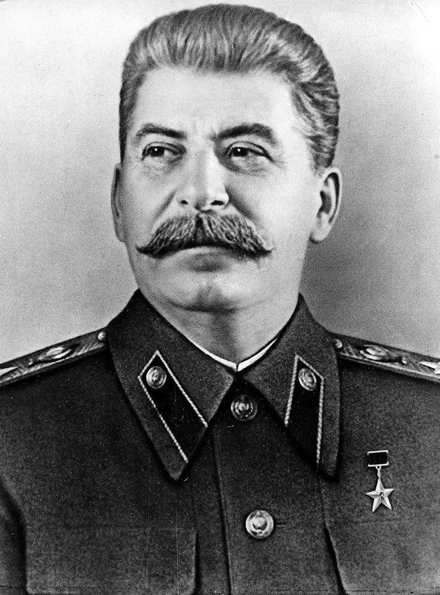

SumberJOSEPH STALIN adalah pemimpin utama Uni Soviet yang dikenal karena kebijakan otoriter yang membentuk perjalanan negara ini pada abad ke-20. Dia berkuasa dari 1924 hingga kematiannya pada 1953. Stalin memainkan peran sentral dalam membentuk dunia pasca-Perang Dunia II dan dikenal karena kebijakan totalitarian, industrialiasi paksa, serta purges yang menyebabkan jutaan kematian.
Nama Lengkap: Iosif Vissarionovich Dzhugashvili Lahir: 18 Desember 1878, Gori, Georgia (saat itu bagian dari Kekaisaran Rusia) Meninggal: 5 Maret 1953, Moskwa, Uni Soviet Jabatan: Sekretaris Jenderal Partai Komunis Uni Soviet (1922–1953) Ketua Dewan Menteri Uni Soviet (1941–1953) Pengaruh: Pemimpin dengan pengaruh besar dalam sejarah dunia, terutama dalam mendirikan negara komunis besar dan mengubah politik internasional, serta mengubah Uni Soviet menjadi kekuatan global.
Stalin lahir di Gori, yang kini merupakan bagian dari Georgia. Ia berasal dari keluarga petani miskin dan mengalami masa kecil yang penuh kesulitan, termasuk kemiskinan dan kekerasan rumah tangga. Pendidikan awalnya di seminari gereja di Tbilisi berakhir setelah dia terlibat dalam kegiatan revolusioner. Ia bergabung dengan Partai Sosial Demokrat Rusia dan setelahnya bergabung dengan faksi Bolshevik yang dipimpin oleh Vladimir Lenin
1. Setelah Kematian Lenin dan Konsolidasi Kekuasaan: Setelah kematian Lenin pada 1924, Stalin berhasil mengalahkan para pesaingnya, seperti Leon Trotsky, untuk menjadi pemimpin Uni Soviet yang tak terbantahkan. Meskipun Lenin mengkritik beberapa kebijakan Stalin dalam surat terakhirnya, Stalin berhasil mengonsolidasikan kekuasaannya dan mulai memperkenalkan kebijakan otoriter. 2. Kolektivisasi dan Industrialisasi (1928–1930-an): Kolektivisasi pertanian adalah salah satu kebijakan utama Stalin yang bertujuan untuk mengubah pertanian individu menjadi kolektif yang dikelola negara. Kebijakan ini mengarah pada kelaparan besar, terutama di Ukraina, yang dikenal sebagai Holodomor dan menyebabkan jutaan kematian. Di sisi lain, Stalin juga memperkenalkan rencana lima tahun yang bertujuan untuk mengindustrialisasi Uni Soviet. Meskipun berhasil mengubah Uni Soviet menjadi negara industri, kebijakan ini sangat mengandalkan kerja paksa dan pengorbanan besar. 3. Rezim Teror dan Pembersihan (Purges): Salah satu ciri utama pemerintahan Stalin adalah teror negara. Pada 1936-1938, Stalin melakukan The Great Purge, di mana ia mengeliminasi banyak orang yang dianggap sebagai musuh negara, baik di dalam partai, militer, maupun masyarakat umum. Ribuan orang dieksekusi atau dipenjara di kamp kerja paksa Gulag, sementara ribuan lainnya diasingkan atau dihukum mati tanpa proses pengadilan yang adil. 4. Perang Dunia II dan Peran Uni Soviet: Pada 1939, Stalin menandatangani Pakta Molotov-Ribbentrop dengan Nazi Jerman, yang merupakan pakta non-agresi antara kedua negara. Namun, pada 22 Juni 1941, Jerman mengkhianati perjanjian tersebut dan menyerang Uni Soviet. Stalin memimpin negara melalui Perang Patriotik Besar (sebutan Uni Soviet untuk Perang Dunia II), meskipun awalnya terjadi kekalahan besar. Namun, setelah Pertempuran Stalingrad yang terjadi pada 1942-1943, pasukan Soviet berhasil memukul mundur pasukan Jerman. Uni Soviet menjadi salah satu kekuatan utama dalam mengalahkan Nazi dan berperan penting dalam pembebasan Eropa Timur setelah perang. 5. Pasca-Perang Dunia II dan Perang Dingin: Setelah perang, Stalin membentuk blok komunis di Eropa Timur dan memperkenalkan pemerintahan komunis di negara-negara seperti Polandia, Hungaria, Cekoslowakia, dan Rumania. Ini menandai awal dari Perang Dingin, konflik ideologis antara blok Barat (Amerika Serikat) dan blok Timur (Uni Soviet), yang berlangsung selama beberapa dekade setelah Perang Dunia II.
✅ Dampak Positif: Stalin dianggap sebagai pahlawan oleh sebagian orang karena perannya dalam memenangkan Perang Dunia II dan membangun Uni Soviet sebagai salah satu kekuatan besar di dunia. Selama masa pemerintahannya, Uni Soviet berhasil mencapai kemajuan industri yang besar, yang mengubah Uni Soviet menjadi negara industri terbesar kedua di dunia setelah Amerika Serikat. ❌ Dampak Negatif: Stalin juga dikenang karena kebijakan represif yang menyebabkan jutaan kematian. Purges, Kelaparan Ukraina (Holodomor), dan kamp kerja paksa menjadi bagian dari warisan gelap pemerintahannya. Kebijakan totalitarianisme yang diterapkannya menyebabkan pengawasan yang sangat ketat terhadap kehidupan pribadi warga negara, mengurangi kebebasan individu, dan menekan oposisi.
Stalin adalah tokoh kontroversial dalam sejarah dunia. Di satu sisi, ia dihormati karena perannya dalam mengalahkan Nazi Jerman dan memimpin Uni Soviet melalui periode yang sangat sulit, tetapi di sisi lain, dia dihujat karena penggunaan kekuasaan otoriter yang sangat represif. Pengaruhnya terhadap perkembangan komunisme global dan Perang Dingin sangat besar, menjadikannya sebagai salah satu tokoh paling penting dalam sejarah abad ke-20.